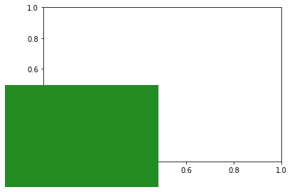
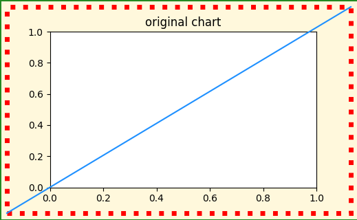
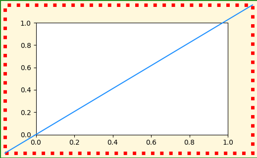

How to draw things in figure coordinates in MPL using IPython/Jupyter
matplotlib
jupyter
Author
Teresa Kubacka
Published
November 26, 2022
I only wanted to draw a frame around my Matplotlib figure. Instead, I discovered that Ipython matplotlib-inline backend and the layout parameter called from within the MPL code override each other in a confusing way. Also, the layout = tight does not lead to the same result when called from the inline backend and when called from MPL.
import matplotlib.pyplot as plt from matplotlib.patches import Rectangle from matplotlib.lines import Line2Dimport matplotlib as mpl print("MPL: {}".format(mpl.__version__))import IPython as Iptprint("IPython: {}".format(Ipt.__version__))
MPL: 3.6.1
IPython: 8.2.0
There are at least 2 ways to draw a frame around the whole chart:
modify the figure appearance using f.set_edgecolor() + f.set_linewidth() (default linewidth is zero)
create a new rectangle and add it to the figure children.
This is how you can add rectangles to the figure itself: to use the figure coordinates, use the transform parameter. After creating a new rectangle object, add it to f.patches.
f, ax = plt.subplots()# rectangle covering the bottom left quarter of the figure: ar = Rectangle(xy=(0,0), width=0.5, height=0.5, transform=f.transFigure, facecolor='forestgreen')f.patches.extend([ar])

However, the longer I tried to reconcile the two functionalities, the longer I got confused. Let me show you.
Let’s define a function that will create an example chart. To be able to distinguish between different artists on the chart, I will:
color the chart background as yellow and draw a green frame around it
add an extra red rectangle that should cover the whole figure (from (0,0) to (1,1) in figure coordinates)
add a blue line that should go across the whole figure (from (0,0) to (1,1) in figure coordinates)
def ugly_chart(layout_kw={}):
def ugly_chart(layout_kw={}):# initialize the figure with a default layout f, ax = plt.subplots(figsize=(5,3), dpi=100, **layout_kw)# style a patch which is automatically created with the figure - it is a yellow rectangle that serves as a figure background f.set_edgecolor('forestgreen') f.set_linewidth(2) f.set_facecolor('cornsilk')# add a rectangle with a red frame that should extend from (0,0) to (1,1) in figure coordinates ar = Rectangle(xy=(0,0), width=1, height=1, transform=f.transFigure, facecolor="none", linewidth=5, edgecolor='red', linestyle=':') f.patches.extend([ar])# add a line that should extend from (0,0) to (1,1) in figure coordinates l1 = Line2D([0, 1], [0, 1], transform=f.transFigure, color='dodgerblue') f.lines.extend([l1])print("bbox of the yellow background patch: {}".format(f.get_children()[0].get_bbox()))print("bbox of the red dotted rectangle box: {}".format(ar.get_bbox()))return f, ax
Let’s inspect the chart that has been drawn as a result. The red and yellow rectangles do not overlap, although their bboxes are technically the same and should correspond to the same artist and same coordinate system!
ugly_chart();
bbox of the yellow background patch: Bbox(x0=0.0, y0=0.0, x1=1.0, y1=1.0)
bbox of the red dotted rectangle box: Bbox(x0=0.0, y0=0.0, x1=1.0, y1=1.0)
Also notice how the right green border got cut out of the image. The bottom green border is visible only partially (I believe this is because the bottom border is 1px off, and right border 2px off).
Now we can preview what we would have obtained if we saved the figure to png. Here let’s stream the MPL output to the buffer and display the buffer. Since the original function will also show us the chart, let’s modify the original chart after we exported it, so that we can distinguish the two:
from io import BytesIOf, ax = ugly_chart();# export to buffer buf = BytesIO()f.savefig(buf, format="png")# modify and show the original chart ax.set_title('original chart')
bbox of the yellow background patch: Bbox(x0=0.0, y0=0.0, x1=1.0, y1=1.0)
bbox of the red dotted rectangle box: Bbox(x0=0.0, y0=0.0, x1=1.0, y1=1.0)
Text(0.5, 1.0, 'original chart')

And the exported chart would look like this:
# display the buffer - output of savefig from IPython.display import Image Image(buf.getvalue())
WTF? It seems that the savefig does everything properly! But I mostly work with Jupyter interactively, so I do need the inline backend to work properly. So what is happening?
After some digging, it turns out that the reason for this discrepancy is the Ipython inline backend configuration. Ipython silently sets all the plots to be rendered in tight layout. We can modify them with a magic command. However, keep in mind this will modify the MPL behavior globally for all the plots in the current session:
bbox of the yellow background patch: Bbox(x0=0.0, y0=0.0, x1=1.0, y1=1.0)
bbox of the red dotted rectangle box: Bbox(x0=0.0, y0=0.0, x1=1.0, y1=1.0)

It works as expected: I got back the initial (incorrect) result.
Now we can pass some keywords to the plt.subplots() inside the ugly_chart(). Let’s try to override the layout setting that the IPython has set, by calling the layout parameter while initializing a figure: